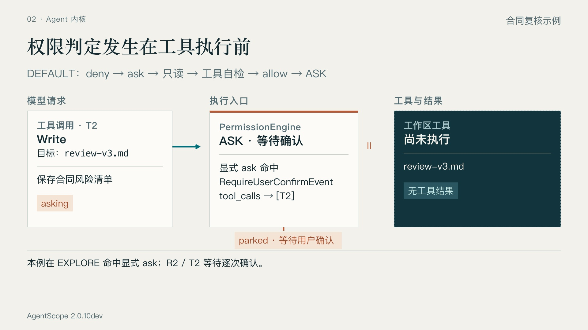
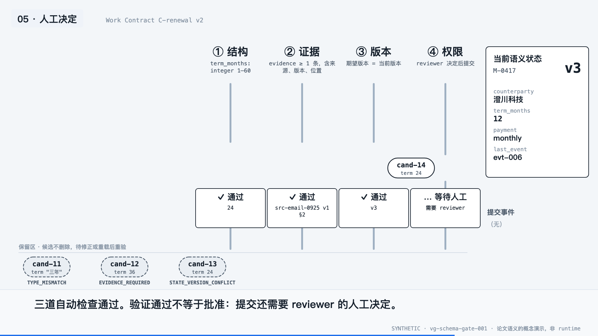
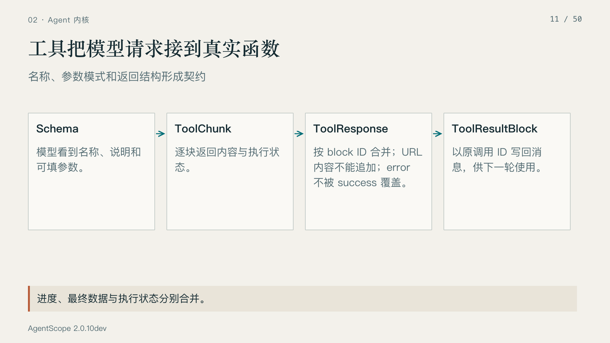
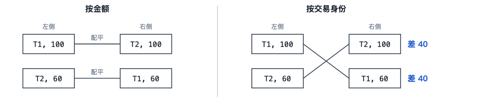
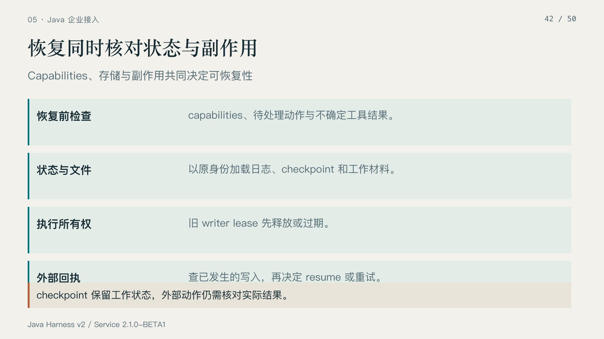
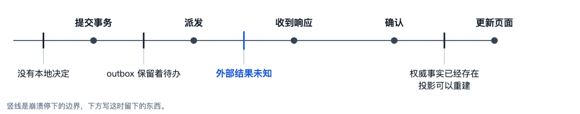

01 · 权限停在哪里

AgentScope：三块说明面板，等待主要由文字和标签说明。
Schema闸门：候选停在具体关口；拒收者仍留在保留区。02 · 身份如何影响结果

AgentScope：四个概念以等大卡片排列，合并规则仍靠读字。
SaaS教材：记录不变，只改配对连线，错误与差额直接显现。03 · 恢复依据在哪里

AgentScope：恢复条件分列四行，位置没有表达断点。
SaaS教材：断点对齐流程与留下的事实，空间位置承担对应关系。